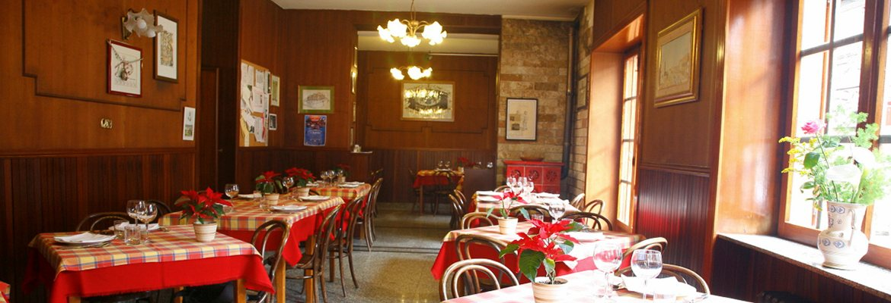

Atripalda · Irpinia · provincia di Avellino
Una trattoria di famiglia,
dal 1953
L'anno è inciso nello stemma della casa. La cucina è legata al territorio e la conduzione è rimasta familiare.
Chiama lo 0825 626115Le origini
Le parole della trattoria
«La trattoria ValleVerde nasce nel 1953 ad Atripalda dove esercita l'attività ristorativa. La scomparsa della celebre Pasqualina De Benedictis da tutti conosciuta come “Zia Pasqualina” ha lasciato una eredità importante con un grande compito: mantenere uno standard qualitativo alto legato esclusivamente al territorio e alla tipicità dei prodotti.
Tutt'oggi l'attività è a conduzione familiare con una attenta ricerca di materie prime di qualità (cosa sempre più difficile) e oggi, a differenza di una volta, all'abbinamento cibo-vino che indiscutibilmente è sinonimo di cultura e qualità.»
Sono parole della trattoria, riprese dal suo sito.

La sala
D'estate il giardino, d'inverno le due salette
D'estate si mangia in giardino. D'inverno ci si accomoda in una delle due salette: la prima, subito all'ingresso, è la più antica; l'altra è una sala enoteca, con le bottiglie alle pareti.
E «sala enoteca» non è un modo di dire. La carta dei vini che la trattoria ha pubblicato partiva dal Fiano di Avellino, dal Greco di Tufo e dal Taurasi dell'Irpinia, e da lì arrivava al Piemonte, alla Toscana, al Trentino-Alto Adige, all'Umbria, alla Sicilia, alla Sardegna e allo Champagne.
Fonti di questa sezione: la scheda della trattoria sul Touring Club Italiano e la carta dei vini pubblicata dalla trattoria stessa.
Dall'archivio
Le due salette
Sono due stampe piccole, riprese dall'archivio del sito della trattoria e lasciate alla misura in cui sono state trovate: ingrandirle vorrebbe dire sgranarle.
La cucina
Tre piatti della casa
Sono sul menù che la trattoria ha pubblicato, e li nomina anche la scheda del Touring Club Italiano.
-
Zuppa di ceci
Con extravergine ed origano.
-
Ravioli di ricotta
Al ragù.
-
Delizie al limone
E al mascarpone, e il caffè.
Il menù di oggi lo dice la trattoria, al telefono: 0825 626115.
Il riconoscimento
Chiocciola di Osterie d'Italia 2026
Nella guida Osterie d'Italia 2026 di Slow Food la Campania ha 39 Chiocciole. Una è qui: «Valleverde Zi' Pasqualina – Atripalda (AV)».
E lo scrive anche chi si è seduto a tavola: 9,6 su 10 su 261 recensioni raccolte da TheFork, che le accetta solo da chi ha prenotato o pagato da lì. Alla cucina danno 9,8, al servizio 9,9.
Fonti: l'elenco delle Chiocciole di Osterie d'Italia 2026 pubblicato da Slow Food, e la scheda della trattoria su TheFork.
Dove siamo
Ad Atripalda, in via Pianodardine
Indirizzo
Via Pianodardine 112
83042 Atripalda (AV)